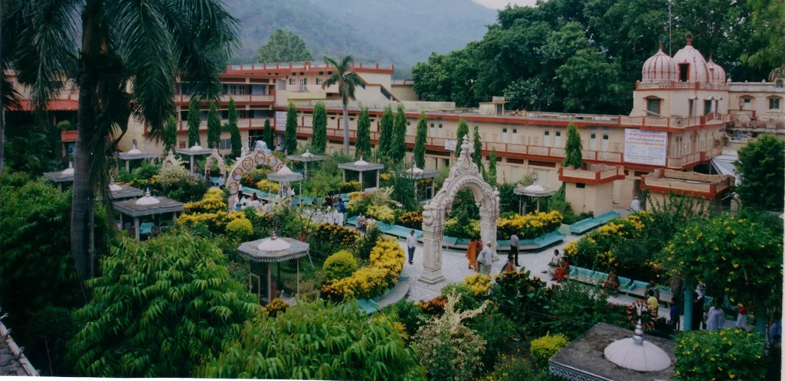
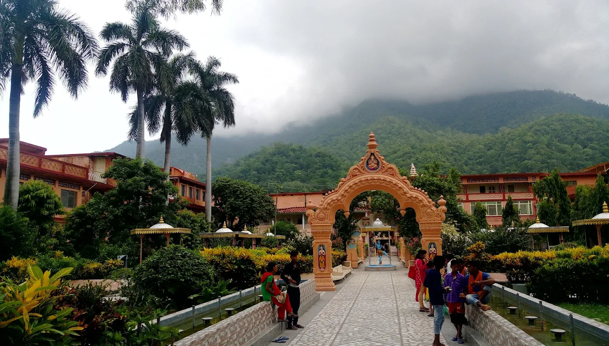
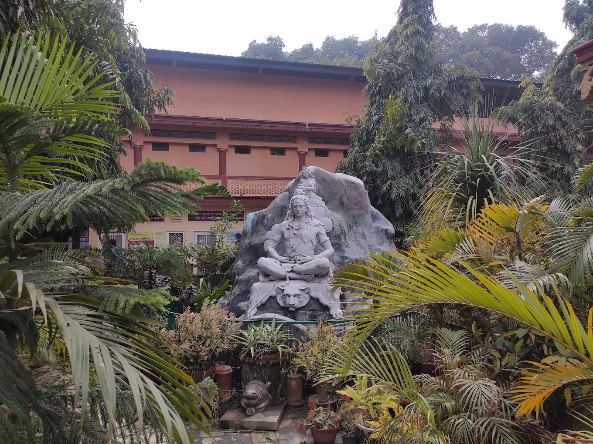
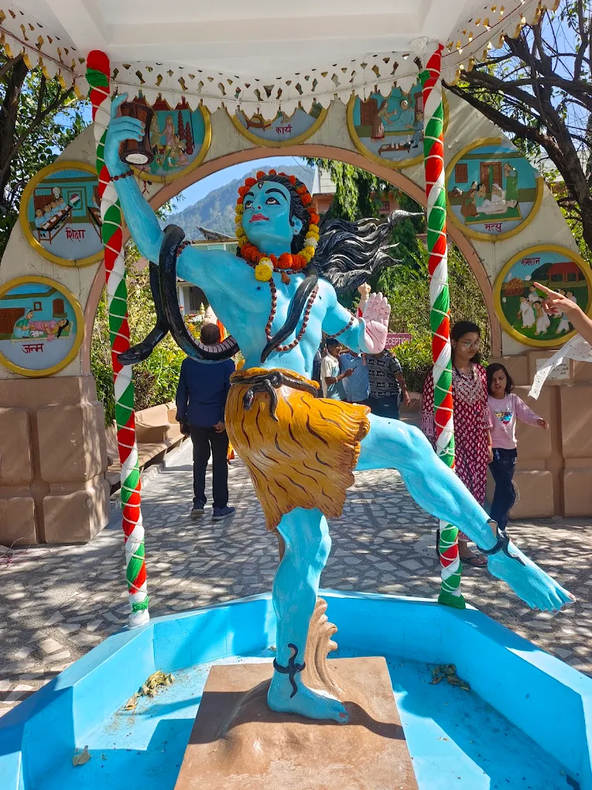
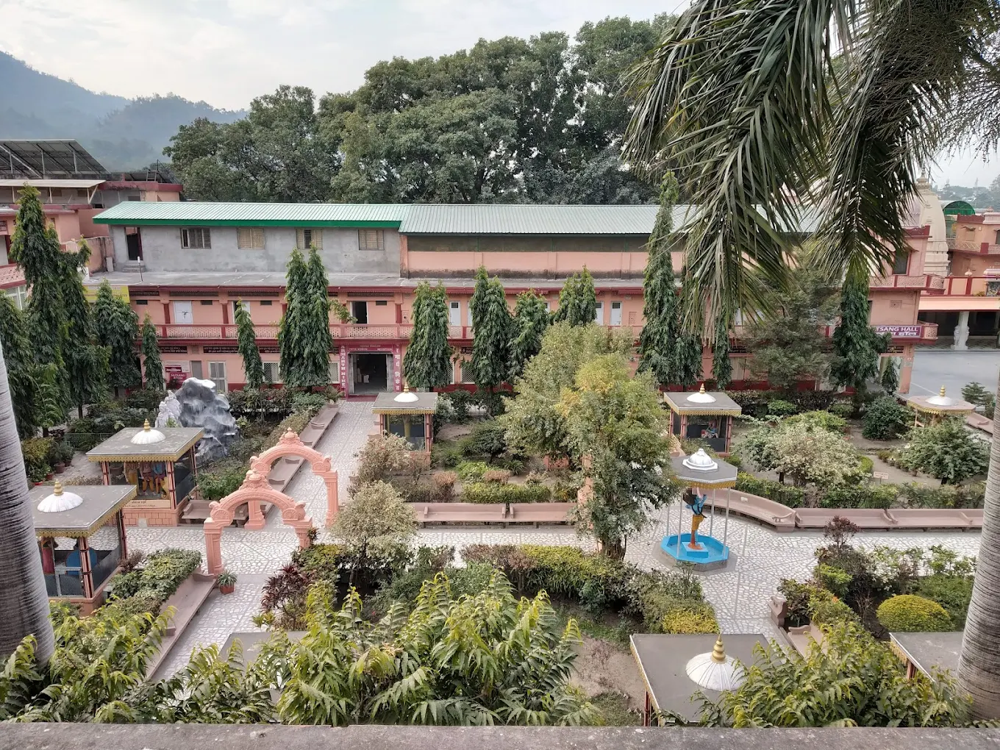
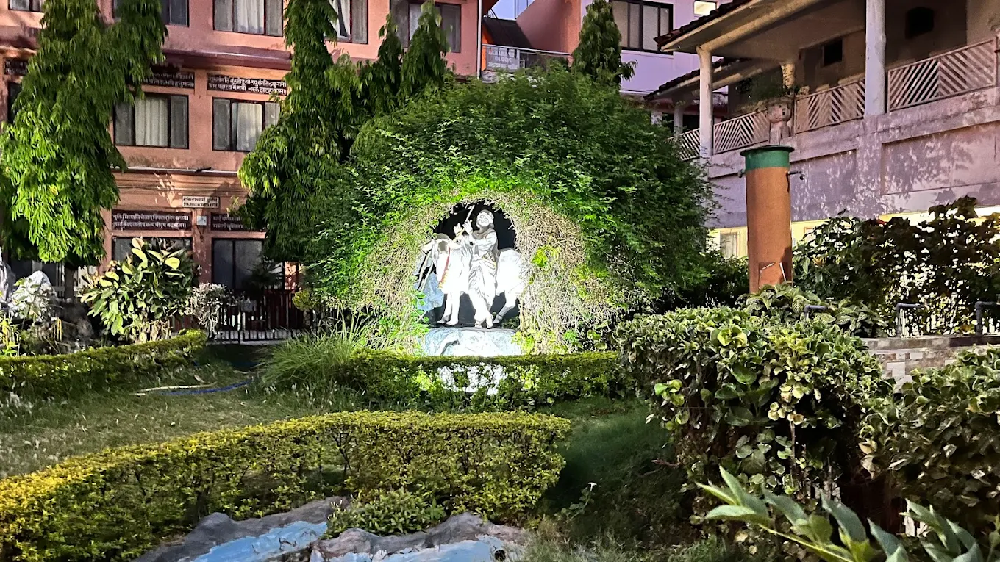
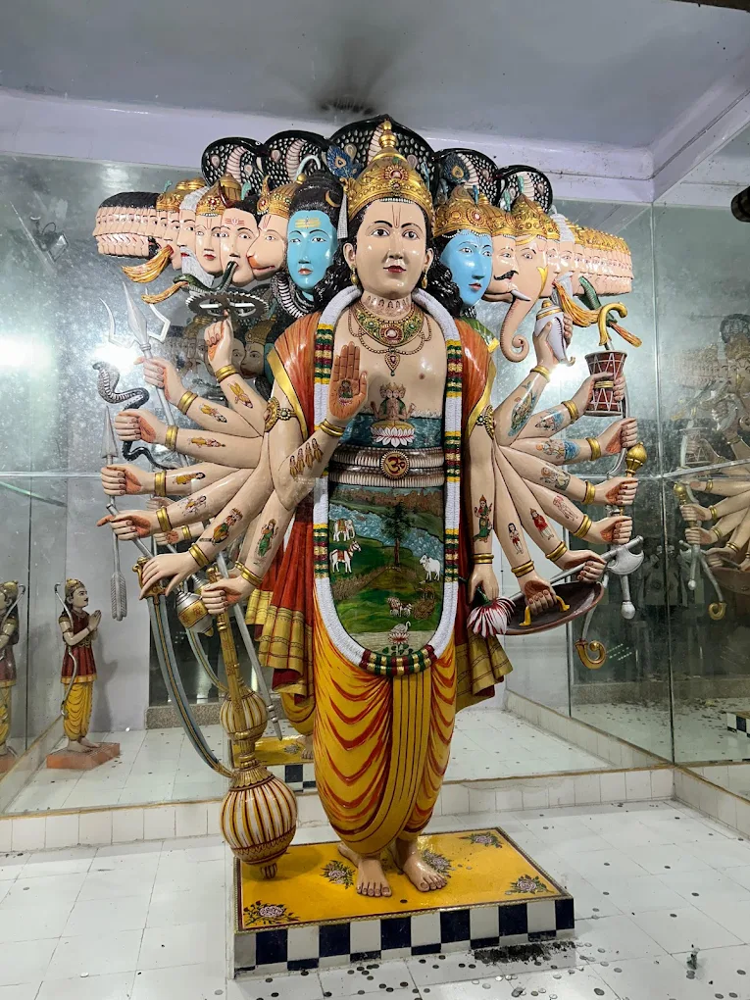
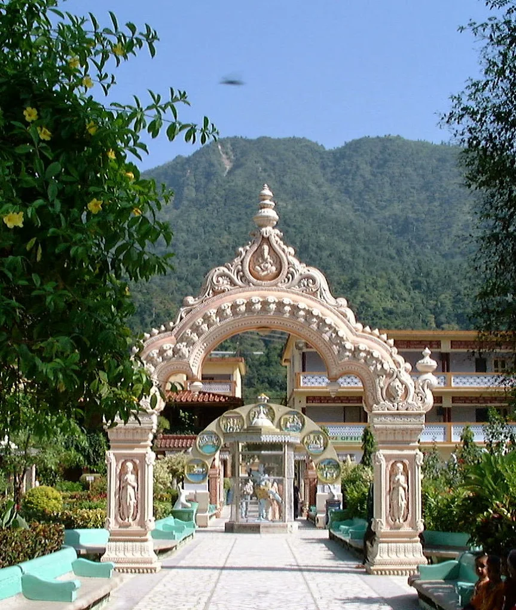

Parmarth Niketan Ashram is one of the largest and most renowned ashrams in Rishikesh, located on the serene banks of the holy Ganga near Ram Jhula. Founded in 1942 and expanded under the guidance of Pujya Swami Chidanand Saraswatiji Maharaj, it is a global center for yoga, spirituality, seva (selfless service), and environmental consciousness. The ashram welcomes people from all walks of life and nationalities, offering a peaceful sanctuary for inner reflection, healing, and connection with the divine.
Parmarth Niketan is most famous for its world-famous daily Ganga Aarti at sunset, where hundreds of diyas light up the river, Vedic chants fill the air, and a profound sense of unity and peace envelops everyone present. The ashram also hosts yoga & meditation classes, ayurvedic treatments, spiritual discourses, cleanliness drives, and interfaith programs. With its lush gardens, 1,000-room guesthouse, 14-foot statue of Lord Shiva, and direct Ganga access, it is a true embodiment of Devbhoomi’s spiritual essence.
Year-round — but especially during Ganga Aarti (evening ~6:00–7:00 PM) or festivals like International Yoga Festival (March) for a deeper experience.
World-famous Ganga Aarti, daily yoga & meditation, 14-ft Shiva statue, Ganga beach access, ayurveda center, seva projects, and interfaith harmony programs.
Arrive 30–45 min early for Ganga Aarti seating, wear modest clothes, participate in seva or classes, respect silence in meditation areas, and stay for the full ashram experience if possible.
"Parmarth Niketan is not just an ashram — it is a living temple of love, service, and surrender, where the Ganga herself teaches the heart to flow with grace and compassion."